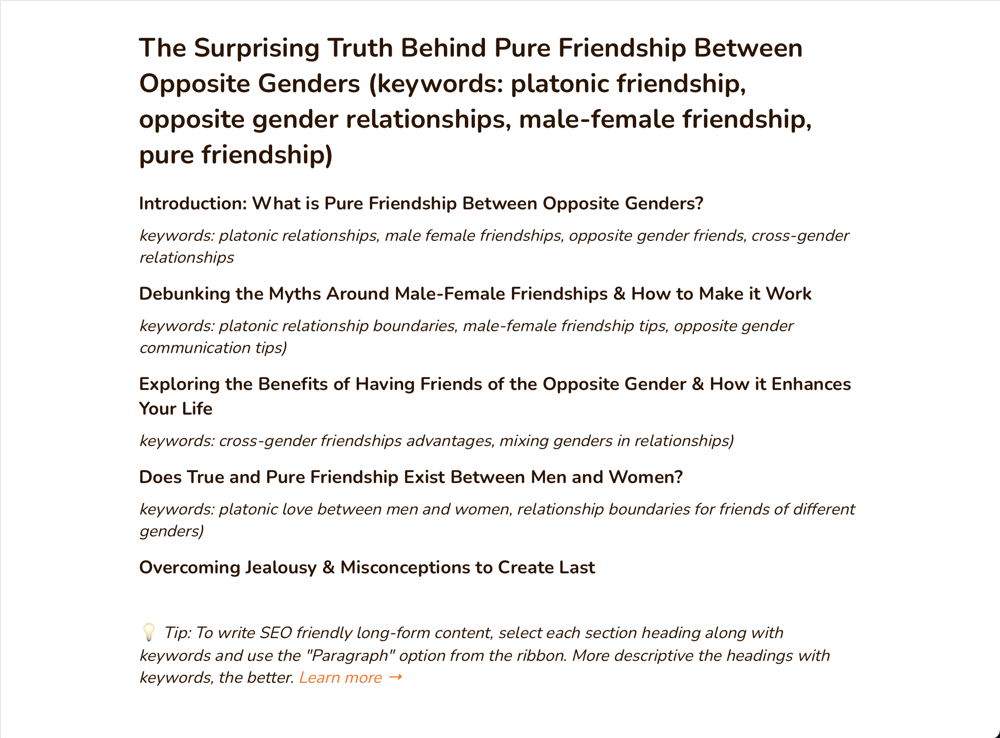

To me, the outline helps a lot in the structure and gives a organized plot of how to write a blog about the topic I gave, Does pure friendship exist between opposite gender.
But, there is one tiny thing that I think it shall improve ---- I would like to have some sort of direction for searching data to create ethos.